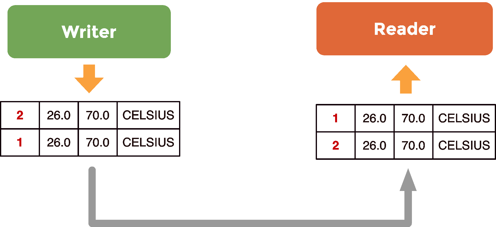
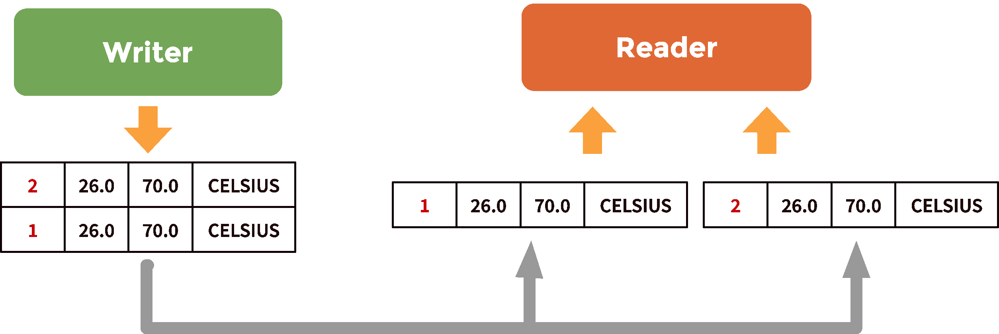
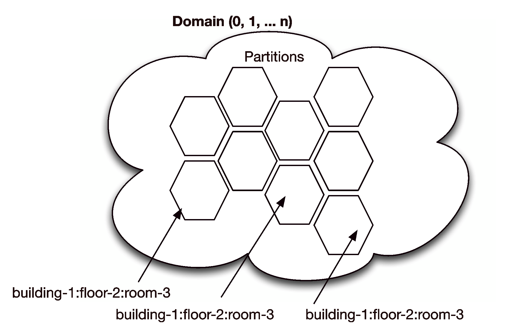

2. Topics, Domains and Partitions¶
The previous chapter introduced the basic concepts of DDS and walked through the steps required to write a simple Pub/Sub application.
This chapter will look at DDS in more depth, starting with data management.
2.1. Topics Inside Out¶
A Topic represents the unit for information that can produced or consumed by a DDS application. Topics are defined by a name, a type, and a set of QoS policies.
2.1.1. Topic Types¶
DDS is independent of the programming language as well as the Operating System (OS), so it defines its type system along with a space- and time-efficient binary encoding for its types. Different syntaxes can be used to express DDS topic types, such as IDL, XML. Some vendors, such as PrismTech, also support Google Protocol Buffers.
This Tutorial will focus on the subset of IDL that can be used to define a topic type. A topic type is made with an IDL struct plus a key. The struct can contain as many fields as required, and each field can be a primitive type (see table Primitive Types), a template type (see table IDL Template Types), or a constructed type (see table IDL Constructed types).
| Primitive Type | Size (bits) |
|---|---|
| boolean | 8 |
| octet | 8 |
| char | 8 |
| short | 16 |
| unsigned short | 16 |
| long | 32 |
| unsigned long | 32 |
| long long | 64 |
| unsigned long long | 64 |
| float | 32 |
| double | 64 |
As shown in the table Primitive Types, primitive types are essentially what you would expect, with just one exception: the int type is not there! This should not be a problem since the IDL integral types short, long and long long are equivalent to the C99 int16_t, int32_t and int64_t. And what is more: in contrast to the int type, which can have a different footprint on different platforms, each of these types has specified exactly what its footprint is.
| Template Type | Example |
|---|---|
| string<length = UNBOUNDED$> | string s1;
string<32> s2;
|
| sequence<T,length = UNBOUNDED> | sequence<octet> oseq;
sequence<octet, 1024> oseq1k;
sequence<MyType> mtseq;
sequence<MyType, $10>$ mtseq10;
|
In the table IDL Template Types, the string can be parameterized only with respect to their maximum length, while the sequence type can be parameterized with respect to both its maximum length and its contained type. The sequence type abstracts a homogeneous random access container, pretty much like the std::vector in C++ or java.util.Vector in Java.
Finally, it is important to point out that when the maximum length is not provided the type is assumed to have an unbounded length, meaning that the middleware will allocate as much memory as necessary to store the values that the application provides.
The table IDL Constructed Types shows that DDS supports three different kinds of IDL constructed types: enum, struct, and union.
| Constructed Type | Example |
|---|---|
| enum | enum Dimension {1D, 2D, 3D, 4D}; |
| struct | struct Coord1D { long x;};
struct Coord2D { long x; long y; };
struct Coord3D { long x; long y; long z; };
struct Coord4D { long x; long y; long z,
unsigned long long t;};
|
| union |
}; |
It should be clear from this that a Topic type is a struct that can contain (as fields) nested structures, unions, enumerations, and template types, as well as primitive types. In addition, it is possible to define multi-dimensional arrays of any DDS-supported or user-defined type.
To tie things together, there are language-specific mappings from the IDL types described above to mainstream programming languages such as C++, Java, and C#.
2.1.2. Topic Keys, Instances and Samples¶
Each Topic comes with an associated key-set. This key-set might be empty or it can include an arbitrary number of attributes defined by the Topic Type. There are no limitations on the number, kind, or level of nesting, of attributes used to establish the key. There are some limitations to its kind though: a key should either be a primitive type (see table Primitive Types), an enumeration or a string. A key cannot be constructed type (although it may consist of one or more members of an embedded constructed type), an array or a sequence of any type.
enum TemperatureScale {
CELSIUS,
FAHRENHEIT,
KELVIN
};
struct TempSensorType {
short id;
float temp;
float hum;
TemperatureScale scale;
};
#pragma keylist TempSensorType id
struct KeylessTempSensorType {
short id;
float temp;
float hum;
TemperatureScale scale;
};
#pragma keylist KeylessTempSensorType
Returning to the example application (the temperature control and monitoring system), it is possible to define a keyless variant of the TempSensorType defined in the Foundations chapter.
Keyed and Keyless Topics shows the TempSensorType with the id attribute defined as its key, along with the KeylessTempSensorType showing off an empty key-set as defined in its #pragma keylist directive.
If two topics associated with the types declared in Keyed and Keyless Topics are created, what are the differences between them?
dds::topic::Topic<tutorial::TempSensorType> topic(dp, "TTempSensor");
dds::topic::Topic<tutorial::KeylessTempSensorType> kltsTopic(dp,
"KLTempSensorTopic");
The main difference between these two topics is their number of instances:
- Keyless topics have only one instance, and thus can be thought of as singletons.
- Keyed topics have one instance per key-value.
Making a parallel with classes in object-oriented programming languages, a Topic can be regarded as defining a class whose instances are created for each unique value of the topic keys. Thus, if the topic has no keys you get a singleton.
Topic instances are runtime entities for which DDS keeps track of whether
- there are any live writers,
- the instance has appeared in the system for the first time, and
- the instance has been disposed (explicitly removed from the system).
Topic instances impact the organization of data on the reader side as well as the memory usage. Furthermore, as will be seen later in this Tutorial, there are some QoSs that apply at the instance level.
We will now illustrate what happens when you write a keyless topic versus a keyed topic.
If we write a sample for the keyless KLSensorTopic this is going to modify the value for exactly the same instance, the singleton, regardless of the content of the sample.
On the other hand, each sample written for the keyed TempSensorTopic will modify the value of a specific topic instance, depending on the value of the key attributes (id in the example).
Data Reader queue for a keyless Topic
{kind=link}
Thus, the code below is writing two samples for the same instance, as shown in Data Reader queue for a keyless Topic. These two samples will be posted in the same reader queue: the queue associated with the singleton instance, as shown in Data Reader queue for a keyless Topic.
dds::pub::DataWriter<tutorial::KeylessTempSensorType> kldw(pub, kltsTopic);
tutorial::KeylessTempSensorType klts(1, 26.0F, 70.0F, tutorial::CELSIUS);
kldw.write(klts);
kldw << tutorial::KeylessTempSensorType(2, 26.0F, 70.0F, tutorial::CELSIUS);
If we write the same samples for the TempSensorTopic, the end-result is quite different. The two samples written in the code fragment below have two different id values, respectively 1 and 2; they are referring to two different instances.
dds::pub::DataWriter<tutorial::TempSensorType> dw(pub, topic);
tutorial::TempSensorType ts(1, 26.0F, 70.0F, tutorial::CELSIUS);
dw.write(ts);
dw << tutorial::TempSensorType(2, 26.0F, 70.0F, tutorial::CELSIUS);
These two samples are posted into two different queues, as represented in Data Reader queues for keyed Topics, one queue for each instance.
Data Reader queues for keyed Topics
{kind=link}
In summary, Topics should be thought of as classes in an object-oriented language, and each unique key-value identifies an instance. The life-cycle of topic instances is managed by DDS and to each topic instance are allocated memory resources; think of it as a queue on the reader side. Keys identify specific data streams within a Topic. Thus, in our example, each id value will identify a specific temperature sensor. Differently from many other Pub/Sub technologies, DDS allows keys to be used to automatically de-multiplex different streams of data. Furthermore, since each temperature sensor represents an instance of the TempSensorTopic it is possible to track the lifecycle of the sensor by tracking the lifecycle of its associated instance. It is possible to detect when a new sensor is added into the system, because it introduces a new instance; it is possible to detect when a sensor has failed, because DDS can report when there are no more writers for a specific instance. It is even possible to detect when a sensor has crashed and then recovered thanks to information about state transitions that is provided by DDS.
Finally, before moving on from DDS instances, it is emphasized that DDS subscriptions concern Topics. Thus a subscriber receives all of the instances produced for that topic. In some cases this is not desirable and some scoping actions are necessary. Scoping is discussed in the next section.
2.2. Scoping Information¶
2.2.1. Domain¶
DDS provides two mechanism for scoping information, domains and partitions.
A domain establishes a virtual network linking all of the DDS applications that have joined it. No communication can ever happen across domains unless explicitly mediated by the user application.
2.2.2. Partition¶
Domains can be further organized into partitions, where each partition can represent a logical grouping of topics.
DDS Partitions are described by names such as SensorDataPartition, CommandPartition, LogDataPartition, etc., and a partition has to be explicitly joined in order to publish data in it or subscribe to the topics it contains.
Domains and partitions in DDS
{kind=link}
The mechanism provided by DDS for joining a partition is very flexible as a publisher or a subscriber can join by providing its full name, such as SensorDataPartition, or it can join all the partitions that match a regular expression, such as Sens* or *Data*. Supported regular expressions are the same as those accepted by the POSIX fnmatch function (see POSIX fmatch).
To recap: partitions provide a way of scoping information. This scoping mechanism can be used to organize topics into different coherent sets.
Partitions can also be used to segregate topic instances. Instance segregation can be necessary for optimizing performance or minimizing footprint for those applications that are characterized by a very large number of instances, such as large telemetry systems, or financial trading applications. Referring to the example temperature monitoring and control system, a scheme can be devised with a very natural partitioning of data that mimics the physical placement of the various temperature sensors. To do this, we can use partition names made of the building number, the floor level and the room number in which the sensor is installed:
building-<number>:floor-<level>:room-<number>
Using this naming scheme, as shown in Domains and partitions in DDS, all of the topics produced in room 51 on the 15th floor of building 1 would belong to the partition building-1:floor-15:room-51. Likewise, the partition expression building-1:floor-1:room-* matches all of the partitions for all of the rooms at the first floor in building 1.
In a nutshell, partitions can be used to scope information, and naming conventions (such as those used for the example temperature control applications) can be used to emulate hierarchical organization of data starting from flat partitions. Using the same technique it is possible to slice and access data across different dimensions or views, depending on the needs of the application.
2.3. Content Filtering¶
Domains and Partitions are useful mechanisms for the structural organization of data, but what if it is neccessary to control the data received based on its content? Content Filtering enables the creation of topics that constrain the values that their instances might take.
When subscribing to a content-filtered topic an application will receive, amongst all published values, only those that match the topic filter. The filter expression can operate on the full topic content, as opposed to being able to operate only on headers as it happens in many other Pub/Sub technologies, such as JMS. The filter expression is structurally similar to a SQL WHERE clause.
The table lists the operators supported by DDS.
| Constructed Type | Example |
|---|---|
| = | equal |
| <> | not equal |
| > | greater than |
| < | less than |
| >= | greater than or equal |
| <= | less than or equal |
| BETWEEN | between and inclusive range |
| LIKE | matches a string pattern |
Content-Filtered topics are very useful from several different perspectives. First of all, they limit the amount of memory used by DDS to the instances and samples that match the filter. Furthermore, filtering can be used to simplify your application by delegating to DDS the logic that checks certain data properties. For instance, if we consider the temperature control application we might be interested in being notified only then the temperature or the humidity are outside a given range. Thus, assuming that we wanted to maintain the temperature between 20.5 and 21.5 degrees and the humidity between 30% and 50%, we could create a Content-Filtered topic that would alert the application when the sensor is producing values outside the desired ranges. This can be done by using the filter expression below:
((temp NOT BETWEEN 20.5 AND 21.5)
OR
(hum NOT BETWEEN 30 AND 50))
The listing Content Filtered Topic shows the code that creates a content-filtered topic for the TempSensor topic with the expression above. Notice that the content-filtered topic is created starting from a regular topic. Furthermore it is worth noticing that the filter expression is relying on positional arguments %0, %2, etc., whose actual values are passed via a vector of strings.
// Create the TTempSensor topic
dds::topic::Topic<tutorial::TempSensorType> topic(dp, "TTempSensor");
// Define the filter expression
std::string expression =
"(temp NOT BETWEEN %0 AND %1) \
OR \
(hum NOT BETWEEN %2 and %3)";
// Define the filter parameters
std::vector<std::string> params =
{"20.5", "21.5", "30", "50"};
// Create the filter for the content-filtered-topic
dds::topic::Filter filter(expression, params);
// Create the ContentFilteredTopic
dds::topic::ContentFilteredTopic<tutorial::TempSensorType> cfTopic(topic,
"CFTTempSensor",
filter);
dds::sub::Subscriber sub(dp);
//This data reader will only receive data that matches the content filter
dds::sub::DataReader<tutorial::TempSensorType> dr(sub, cfTopic);
2.4. Summary¶
This chapter has covered the most important aspects of data management in DDS: topics-types and topic instances, and the various mechanisms provided by DDS for scoping information.
Information can be structurally organized by means of domains and partitions, and special views can be created using content-filtered topics and query conditions.
It is recommended again that the reader compiles and runs the examples and experiments with the programs developed so far.